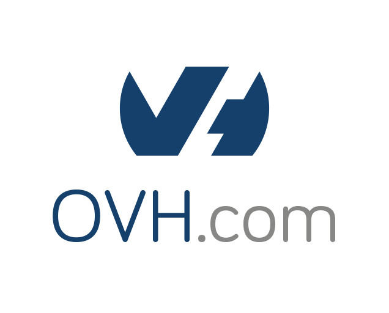
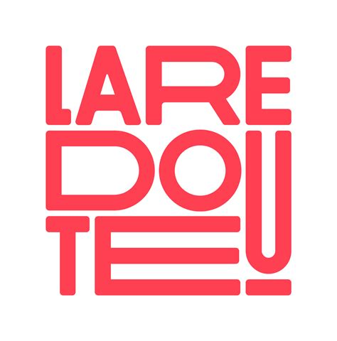
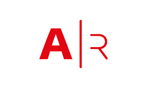
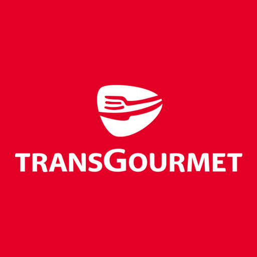
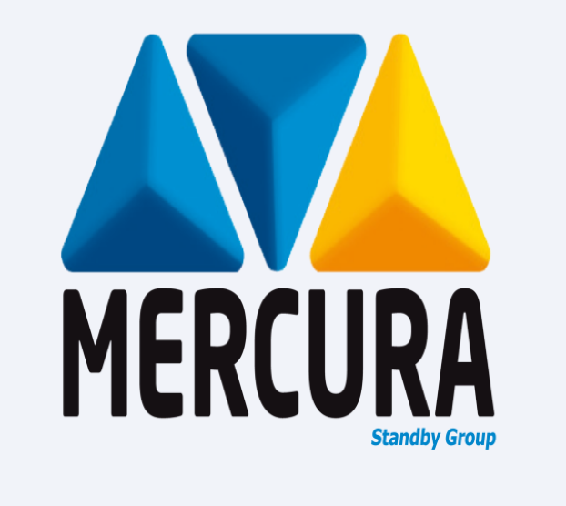

Des applications fragiles
Des incidents récurrents, une dette qui s’accumule, une qualité inégale.
J’aide les DSI et dirigeants de PME, ETI et ESN à fiabiliser leurs applications et leurs flux, développer l’autonomie de leurs équipes et sécuriser le pilotage de leurs projets et prestataires.
Des systèmes plus fiables.
Des équipes plus autonomes.
Des projets qui avancent.
Des situations fréquentes, des enjeux concrets.
Et s’il était temps d’aller plus loin ?
Des incidents récurrents, une dette qui s’accumule, une qualité inégale.
Des données qui circulent mal, des interfaces mal documentées, une visibilité limitée.
Une forte dépendance à certains prestataires ou à quelques individus clés.
Des arbitrages qui ralentissent, un manque de montée en compétences, une surcharge opérationnelle.
Des délais qui glissent, des objectifs qui se diluent, une valeur métier incertaine.
Une vision parcellaire, des choix difficiles à tracer, une transmission qui se complique.
Chaque gamme peut être engagée séparément. Toutes suivent la même progression : comprendre, remettre sous contrôle, maintenir la maîtrise.
Applications, flux et architecture.
Un parcours métier critique, jusqu’à 5 applications et 10 interfaces. Cartographie, registre des risques et feuille de route à 30, 60 et 90 jours.
Architecture cible, ateliers d’arbitrage, contrats d’interface, supervision, tests, retour arrière, plan de bascule et revue d’un premier incrément.
Comité technique, deux revues ciblées, suivi des risques et décisions, trois indicateurs et note mensuelle de pilotage.
Compétences, transmission et relais.
Référentiel ciblé, autoévaluation, calibration, matrices de compétences et polyvalence, dépendances critiques et plan d’action à 3 mois.
Référentiels métiers, parcours de progression, binômes de transmission, ateliers, reconnaissance des acquis, pilote et formation des managers.
Comité de pilotage, accompagnement des managers, atelier collectif, actualisation des matrices et revue des besoins de recrutement et de formation.
Responsabilités, décisions et livraisons.
Entretiens, revue documentaire, cartographie des responsabilités, analyse des blocages, revue technique ciblée et plan d’action à 30 jours.
Clarification du jalon, responsabilités, suivi des risques et décisions, coordination, revues techniques et préparation du passage en exploitation.
Coordination, comité de pilotage, revues de propositions et livrables, suivi des engagements et synthèse mensuelle pour la direction.
Tarifs indicatifs HT pour les périmètres standards présentés. Le cadre exact est confirmé après un échange de qualification.
Un regard indépendant, des décisions argumentées et des livrables directement utilisables.
Contexte, irritants, dépendances et objectifs.
Écouter pour alignerArchitecture, applications, flux, organisation et pilotage.
Objectiver pour éclairerRisques, décisions, actions rapides et trajectoire cible.
Focaliser pour avancerMise en œuvre, documentation et montée en autonomie.
Partager pour durerDes contextes variés, une même exigence : comprendre rapidement, structurer l’action et produire des livrables concrets.
Architecture applicative, DevOps et coordination d’un collectif de 25 personnes.
Matrices de compétences, polyvalence, mentoring et coordination d’équipes.
Documentation technique, guides, contenus API et diffusion des bonnes pratiques.
Pilotage et structuration de projets SaaS, du besoin à l’architecture cible.





Architecte applicatif, Tech Lead et chef de projet, j’interviens à l’endroit où les choix techniques, l’organisation des équipes et le pilotage doivent enfin converger.
Architecture · DevOps · Développement
Pilotage · Transmission · Documentation
Julien présente un profil IT, DevOps et architecture extrêmement rare. Il a fait preuve de beaucoup de pédagogie sur les sujets techniques en se mettant au niveau de son interlocuteur.
Un premier échange pour comprendre votre contexte, poser les bonnes questions et déterminer comment je peux vous aider concrètement.